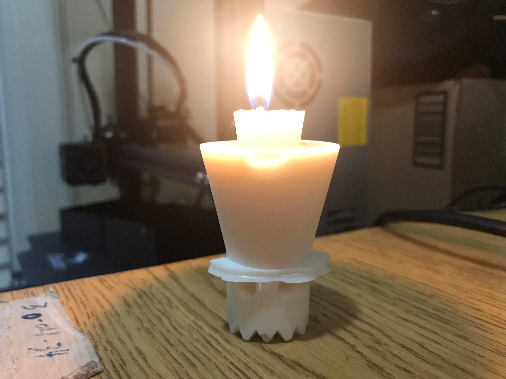
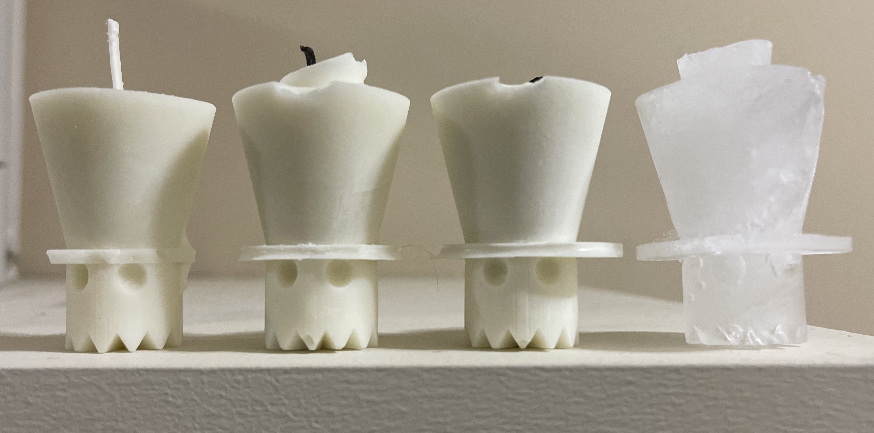

First thing I did was remodel my Ghost Wearing A Top Hat, because the old one had an inconsistent number of polygons. I used a ghost off thingiverse and modeled the hat myself. The final object is a "good" mesh. I made sure to keep the parts from each step so I could go back and change something if I needed to.

Next, I began creating the box that would be the mold for my mold. I cut the ghosts in half and used the Align tools to properly place each ghost half in the box, which I learned how to do from this youtube video. I used boolean union to combine objects.

Next I added the whole in the top to put the material into, and some small hemispheres to help with aligning. After I combined everything using Mesh Boolean Union and ensure that both pieces were in fact good meshes, I was ready to start printing.

I printed the mold molds by convirting the 3dm file into an stl, and then converting that into a geo file using Cura. On Cura I used all default settings and Super Quality. The molds took approximately 18 hours to print.

I was really happy with how the mold molds turned out. The only issue I saw were these little pointy specks on some of the surface, but I was able to scratch off most of it.

The next was to make the actual mold. I mixed together my Oomoo silicon/rubber material and poured it into the 3d printed mold molds. I left it to harden overnight.

I was really excited to take the actual mold out of the mold mold. I was really happy with how it turned out, but it was at this point I began to realize how skinny the brim of the ghost's hat is. I was a little concerned about how that would work out.

I wanted to make a candle using my mold, so I found some instructions here and went ahead with melting the candle wax.

When the wax was fully melted, I poured it into the mold and added a candle wick.

And here is the candle! As I had worried the brim of the top hat didnt work out very well, but the ghost still is very cute. In the future I will be more considerate of the width of different parts of the mold. Perhaps next I will make a pacman ghost wearing a beanie, as those do not have any parts that stick out as much as the top hat.
I made three more candles, and then one out of ice. None of the candle hat brims worked out very well, but the ice hat brim did.
